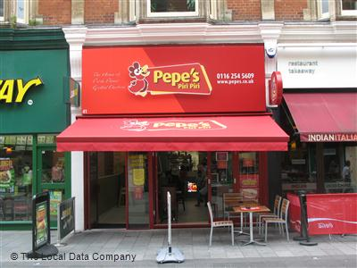
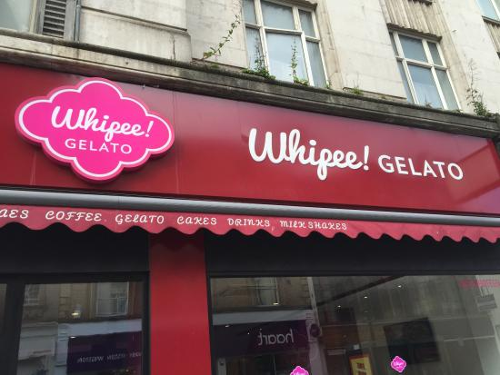
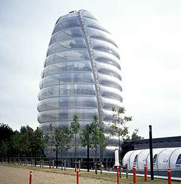
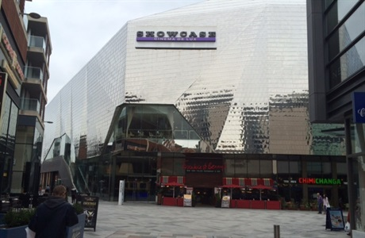

Places of Interest in Leicester
This page will show you the best places to eat out and things to do while you are living here in Leicester. There are so many places here which you should check out, so let's get started.
Highcross Shopping Centre
Highcross Shopping Centre offers a fantastic variety of shops and restuarants such as Debenhams, John Lewis and Stonebaked Pizza. Highcross is just 20 minutes from the motorway, and is easily accessible by bus and train. Be sure to check out the website for bus & train routes, opening times and any further information. Click here for the Highcross website
Best Places to Eat
Feeling hungry? Wanna treat yourself? Be sure to check out these places to eat around Leicester. There's Pepe's on Market street which serves really tasty peri-peri chicken to eat in or takeaway. If you fancy a nice juicy steak, Toro's on Highfield street is the one for you. Finally, the best place for fresh desserts is Whippe Gelatio on Granby street.
|  |  | |
| Best peri-peri chicken! | Tender, juicy steaks with chips! | Fresh ice cream and desserts! |

|

|
 |
| Located on Market Street, next to Subway | Around the corner of Gotham Street | On Granby Street, near the Mercure Hotel |
Things To Do
Leicester is an amazing city to explore with wonderful attractions. There are many things to do such as visiting galleries, museums and watching theatre shows. I have listed a few places below, you should really check out.
|  |  | |
| Visit the New Walk Museum | Check out the National Space Centre | Watch a movie at the Deluxe Showcase Cinema |

|

|
 |
| Right next to New Walk park | On Exploration Drive, near Abbey Lane | Just outside of Highcross |